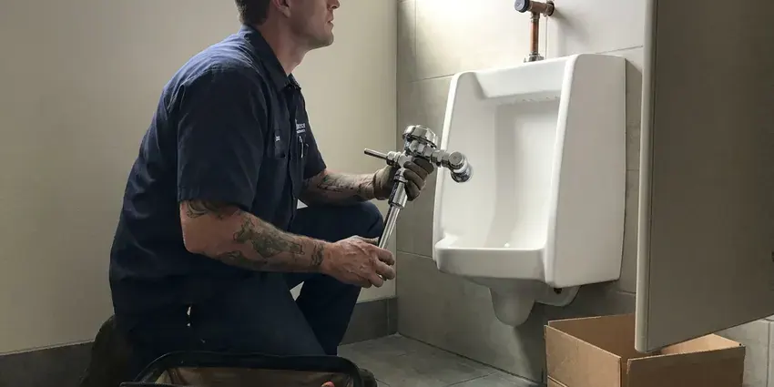

Toilet Repair in Dublin, OH
Hard water and years of daily use wear out toilet parts. We rebuild tanks and reset bowls for homeowners in Dublin, OH.
- Same-Day Visits
- Flat Price Up Front
- Leak-Tested Before We Leave
- Workmanship Guaranteed

Stop the Phantom Refills in Dublin, OH
Tell us what the toilet is doing and we will quote it before we arrive.
Fast Toilet Repair in Dublin, OH
HRL Plumbing sends plumbers who carry flappers in both 2 inch and 3 inch sizes, adjustable fill valves, wax and waxless seals, closet bolts and braided supply lines. That stock covers most of the toilets we see on the first visit. Special orders are rare. Older Eljer and Briggs tanks are the usual exception.
Work we handle every week:
- Find and fix leaks at the tank and base
- Reset toilets on new wax rings
- Fill valve, flapper, flush valve and handle rebuilds

Additional Bathroom Plumbing Services in Dublin, OH
From toilets to showers, our bathroom plumbing team in Dublin, OH repairs, installs, and replaces every fixture with clean, code-compliant work.


Customers
Why Choose HRL Plumbing for Toilet Repair in Dublin, OH?
Putting off a running toilet raises the water bill every month and lets the flush valve seat wear rougher, which turns a ten-dollar flapper into a full flush valve replacement. Small now, bigger later. We stock both pieces so the fix happens on the first trip either way.
- Fast Response, Active leaks go to the front of the schedule.
- Local Plumbers, Our plumbers work every day in and around Dublin, OH.
- Leak Testing, Every repair finishes with a dye test and a dry base.
Citywide Coverage
Downtown condos and older bungalows all have toilets, and our plumbers cover every one of them across the Dublin area. Same-day visits are common. Calls that come in after lunch sometimes roll to the next morning, and we tell you that up front.
Experienced Team
The HRL Plumbing crew is licensed and background-checked, and they wear shoe covers and lay down a drop cloth before the toilet comes off the floor. They clean up after. Old parts go in a bag you can inspect before we haul them away.
Safety-First Approach
Permits are not needed for most toilet repairs, but moving a drain or adding a toilet is a different story, and local code rules apply. We tell you which is which. When a permit applies, we file for it and book the inspection so the work is on record.
Trusted Certified Dublin Plumbing Services Professionals
At HRL Plumbing, we take pride in licensed, certified plumbing services throughout Dublin, OH. Credentials matter in this trade. Every repair, install and maintenance visit follows strict safety and quality rules, and the plumbers doing the work carry recognized industry credentials.
Call Us Now PHCC Plumbing Contractor Recognition
PHCC Plumbing Contractor Recognition Better Business Bureau (BBB) Accreditation
Better Business Bureau (BBB) Accreditation Angi Certified Pro
Angi Certified Pro ISO 9001 Quality Management Certification
ISO 9001 Quality Management CertificationWhat We Fix on Toilets in Dublin, OH
Toilet Tank and Bowl Crack Repair in Dublin
Hairline cracks in a tank can sit for years and then split open when someone sets a heavy lid down or a bolt is tightened too far. Sealants and epoxy are a stopgap at best on a tank that holds water every day. We replace it. A matching replacement tank is often an option, and it can cost less than a whole new toilet.

Clogged Toilet Solutions in Dublin, OH
Paper towels, wipes, dental floss and toys cause most of the repeat clogs we clear, and none of them break down the way toilet paper does. The closet auger usually hooks them and pulls them out. If the toilet clogs again within a week, the problem is further down the line. We check the branch drain and the main next.
Sensor and Flushometer Repair in Dublin
Sensor flush valves fail in their own ways, from dead batteries and dirty sensor eyes to solenoids that stick open and keep a bowl running. Before replacing parts, we test the sensor and the solenoid. Batteries are the cheap fix. Ghost flushing on a sensor valve usually means the eye needs adjusting or cleaning.
After-Hours Toilet Repair in Dublin, OH
Shutting off the angle stop buys you time, but an old multi-turn stop valve can crumble or leak at the stem when it has not been moved in fifteen years. Do not force it. The house main shutoff is your backup if the angle stop will not budge, and we can replace the stop with a quarter-turn valve once the water is off.
Leaking Toilet Repair in Dublin
Water on the floor can come from four places: the wax ring, the tank-to-bowl gasket, the supply line or sweat running off a cold tank. Each one needs a different fix. We dry everything and watch where the water shows up first, which takes about ten minutes and saves pulling a toilet that did not need it. A cracked bowl gets a replacement quote, not a patch.
Pressure-Assist and Dual-Flush Repair in Dublin
Pressure-assist toilets use a sealed vessel inside the china that compresses air with incoming water pressure, and the cartridge inside that vessel eventually wears out. Hardware stores rarely stock those parts. We carry Flushmate cartridges and dual-flush seals for the common TOTO and American Standard models, and we check house pressure, since these units need steady line pressure to flush properly. Low pressure makes them sound weak.
Toilet Flush Repair in Dublin, OH
Two or three tries to get a full flush points to a flapper closing too early, a chain hooked in the wrong hole, scale in the rim jets, or a cracked overflow tube letting water bypass the bowl. You can usually see which one with the lid off. Our plumber watches a complete flush with the tank lid off and replace the flush valve if the overflow tube is cracked, since it cannot be patched.

Toilet Brands We Service in Dublin
Kohler, American Standard, TOTO, Gerber and Mansfield make up most of the toilets we open, and each one uses its own flapper size or flush valve design. The wrong flapper will leak. We match the part to the model number stamped inside the tank and stock the common ones on every truck.
Toilet Repair Near You in Dublin, OH
Our trucks are stocked for the toilets most common in Dublin homes, which means two flapper sizes, several fill valves, wax and waxless seals, and closet bolts in two lengths. Most visits end with a fixed toilet. Special parts are the exception.
Near-me searches turn up a lot of call centers, and the plumber who arrives may never have seen your neighborhood before that day. The plumbers we send work for us directly from Dublin, OH. They explain what failed before starting. You pay the price you approved, nothing added at the end.
HRL Plumbing at a Glance
- Licensed and insured plumbers serving Dublin, OH
- 24/7 emergency service with same-day scheduling
- Clear written estimates, no hidden fees
- 4.9-star rated by 673+ Ohio customers
Dublin Map
Dublin Information
- Population
- 48,923
- Area codes
- 614/740/380
- Service area
- Dublin and communities within 40 miles
- Nearby
- Columbus, Springfield, Newark, Mansfield
Homeowners around Dublin often install a softener to protect water heaters and cut down on spotting on fixtures. A tired flapper or a scaled fill valve in Dublin, OH can run up the water bill and wet the floor long before it looks like a problem.
Talk to a Plumber
Call HRL Plumbing for reliable plumbing work done by licensed pros in Dublin, OH.
Our Specialized Plumbing Services in Dublin, OH
At HRL Plumbing, you get every kind of plumbing service from one company across Dublin, OH. We go from leak detection all the way to full system installations, for homes and commercial buildings, and we do it quickly at a fair price. Take a look at our core services below:


Our Toilet Repair Routine in Dublin, OH
A toilet repair should be short and predictable. This is what to expect.
Schedule the Visit
Reach HRL Plumbing at (740) 449-7505. We ask a few questions so the right parts come along.
Find the Cause
A licensed plumber comes to your Dublin home, finds the failed part and gives you a flat price.
Fix It
Once you approve, the repair gets done with quality parts and a final leak check.
Frequently Asked Questions About Toilet Repair in Dublin
Flapper or fill valve repairs usually run $100 to $250 with parts and labor, while a wax ring reset lands closer to $200 to $400 depending on the flange. A clog that needs an auger is often $150 to $350. You get the exact number after we diagnose it. Nothing gets added to that number unless you sign off on extra work.
Usually, if the china is intact and it flushes cleanly. An older model that takes 3.5 gallons or more per flush is a different case, since a 1.28 gallon WaterSense toilet can pay for itself in water savings over time, especially in a busy household. A cracked tank pushes the answer toward a new toilet.
Watch for phantom refills at night, a hiss from the tank, a toilet that shifts when you sit, and stains or soft flooring around the base. Clogs that keep coming back count as well. Spotting these early keeps a cheap part swap from becoming a floor repair.
Call us and we come back. Our workmanship guarantee covers the repair, so if the toilet starts running or leaking again from the same cause inside the warranty period, the return visit and the fix cost you nothing. Parts failures fall under the manufacturer warranty.
Calcium and magnesium in hard water crust onto the flush valve seat, the fill valve ports and the rim jets under the bowl lip. That leads to slow refills and weak flushes over time. Descaling helps. Parts with fewer small ports also hold up better in hard water.
Swapping tank parts or resetting a toilet on a new wax seal generally does not need a permit. Moving the drain or adding a new toilet usually does, and the rules come from local code, so they vary from one town to the next even within Ohio. We check before starting.
Constant running, a weak flush, water at the base and a bowl that rocks are the big four. Gurgling or whistling from the tank points to a valve problem, and a hairline crack in the porcelain should be looked at before it spreads. Cracks are the one sign you should not sit on.
Flapper and fill valve jobs take twenty to forty-five minutes. A full pull and reset on a new wax ring takes about an hour, and a flange repair adds another thirty to sixty minutes depending on what is under the floor. Deep clogs take longer.
What People Are Saying About Our Plumbing Experts?

Lisa C.
Water was pouring out from under the washing machine on a holiday weekend. HRL Plumbing talked me through closing the valves over the phone and had a plumber at the house within ninety minutes. It was a burst fill hose.
Emergency Plumbing · Dublin, OH
Carlos V.
Our house still had galvanized pipe, and upstairs the shower was a trickle. The crew repiped everything in PEX over three days and patched every drywall hole before they left. The pressure difference is night and day.
Repiping · Springfield, OH
Monica A.
Our water bill nearly doubled in one month with no change in how we used water. The tech checked the meter, heard the leak under the hallway with his equipment, and opened a hole about a foot square. Fixed the same day.
Slab Leak Repair · Dublin, OH
Patricia H.
We had a slab leak that two other companies could not find. HRL Plumbing located it in under an hour with a listening device. They rerouted the line through the attic instead of breaking up the floor, so we kept our kitchen tile.
Slab Leak Repair · Newark, OHSofia M.
Two new toilets went in during one visit. The tech set them on new wax rings and swapped the old supply lines. He also noticed our bathroom faucet dripping and replaced the cartridge while he was there. No mess left behind.
Toilet Installation · Dublin, OHKaren W.
After our third pinhole leak in copper, we stopped patching. HRL Plumbing gave us a written plan room by room and repiped the house in PEX while we stayed in it. The crew covered our floors every morning and cleaned up every night.
Repiping · Mansfield, OH